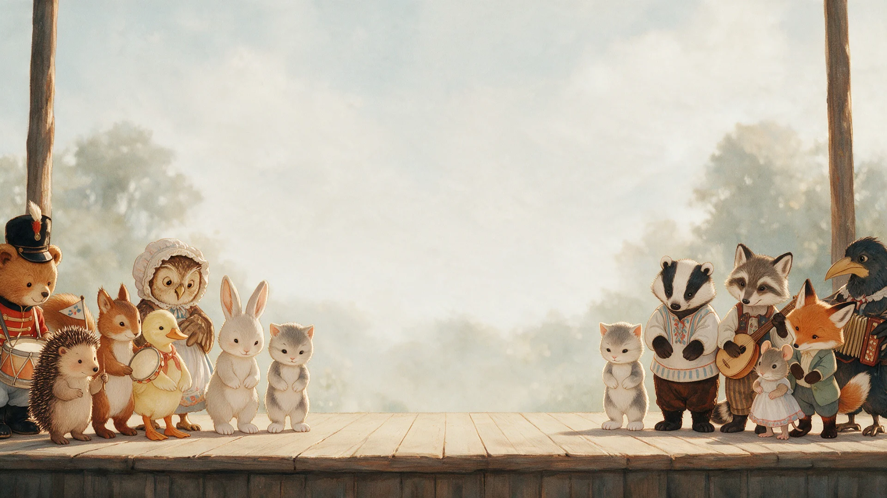

Танцевальная полянка
Повторяй танцевальные движения за персонажами и танцуй под композиции Петра Ильича Чайковского!

П. И. Чайковский, Марш деревянных солдатиков
Посмотри видео и повторяй за персонажами
1 / 6

Ты повторил все шесть танцев вместе со зверятами